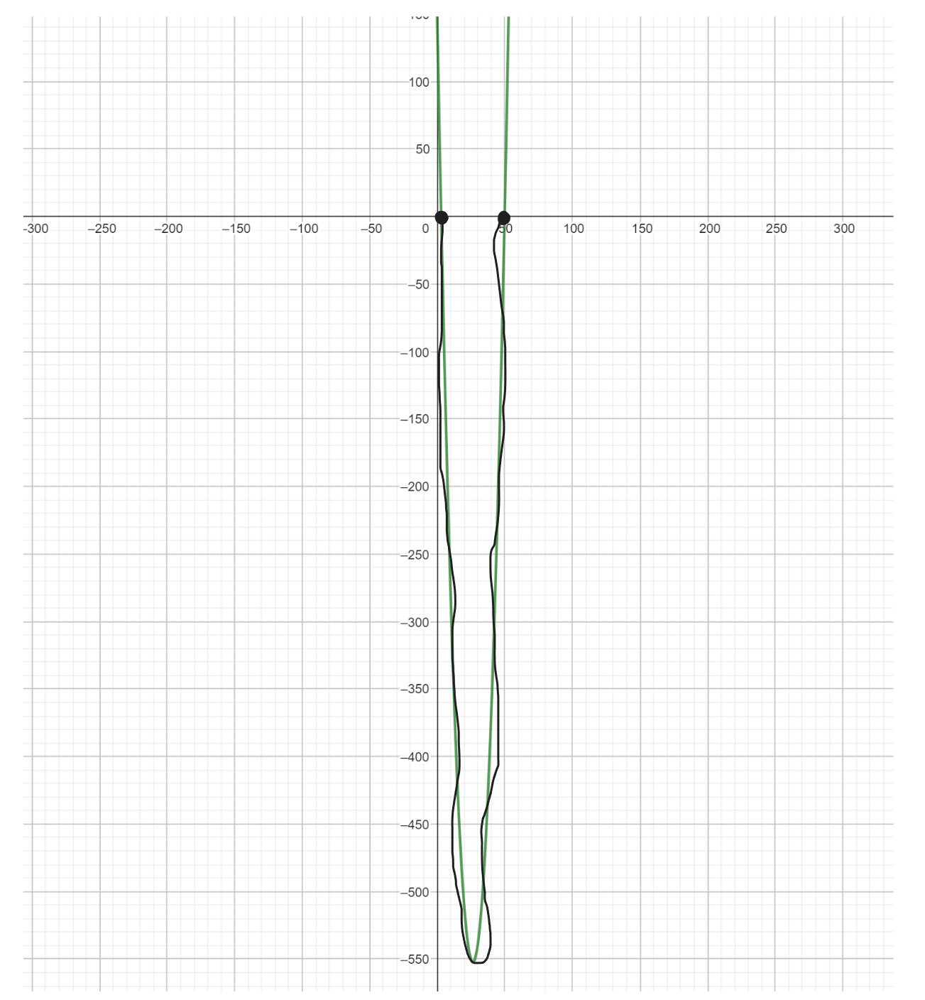

(3b) Mějme dvě čísla zapsaná v pětkové soustavě: \(4112_5\) a \(2443_5\). Vyjádřete jejich rozdíl také v pětkové soustavě.
\[ \begin{array}{ccccc} \ & 4 & 1 & 1 & 2_5 \\ \ - & 2 & 4 & 4 & 3_5\\ \hline\\ & 1 & 1 & 1 & 4_5\\ \end{array} \]
(3b) Původní cena knihy byla 350 Kč. Pak byla zdražena o 20 %. Jelikož nešla na odbyt, byla zlevněna o 15 % (z ceny po zdražení) a to je její současná cena. Rozhodněte, které tvrzení je pravdivé.
\[350* 1,2 = 420\] \[350* 0,85 = 357\] \[357/350 = 1,02\]
(3b) Je dána funkce \(f(x)=2x^2-2\). Spočtěte hodnotu rozdílu \(2f(t+1)-f(t-1)\).
\[2(2(t-1)^2-2)-(2(t-1)^2-2)=2(2(t^2+2t+1)-2)-(2(t^2-2t+1)-2)=2(2t^2+4t+2-2)-(2t^2-4t+2-2)=4t^2+8t-2t^2+4t=2t^2+12\]
(7b)
\[\frac{x}{\frac{1}{x}}=\sqrt{x*x}=\sqrt{x^2}=|x|\]
(7b) Na dvoře jsou psi a slepice. Dohromady mají 50 hlav. Kdyby byla psů třetina a slepic bylo o 3 více, měli by dohromady 86 nohou. Rozhodněte, které tvrzení je pravdivé.
\[P+S = 50 => P = 50-S\] \[4(\frac{1}{3}P)+2(S+3)=86\] \[-----------------------\] \[\frac{4}{3}(50-S)+2S+6=86\] \[\frac{200}{3}-\frac{4}{3}S+2S=80\] \[200-4S+6S=240\] \[2S=40\] \[S=20\] \[P = 30\]
(7b) Délky hran kvádru tvoří tři po sobě jdoucí členy geometrické posloupnosti. Povrch kvádru je \(63cm^2\), součet délek všech hran kvádru je 42. Rozhodněte, které tvrzení je pravdivé.
\[42=4a_1(1+q+q^2)\] \[63=2{a_1}^2q(1+q+q^2)\] \[-----------------\] \[\frac{63}{2{a_1}^2q}=(1+q+q^2)=\frac{42}{2a_1}\] \[63=\frac{42}{4a_1}2{a_1}^2q\] \[63=10,5*2a_1q\] \[63=21a_1 q\] \[3=a_1 q\] \[a_1=\frac{3}{q}\] \[-------------------------\] \[\frac{12}{q}(1+q+q^2)=42\] \[12(1+q+q^2)=42q\] \[12+12q+12q^2=42q\] \[12q^2-30q+12=0\] \[2q^2-5q+2=0\] \[D=25-4*2*2=9\] \[x_{1,2}=\frac{5 \pm 3}{4}\] \[x_1 = 2\] \[x_2 = 0,5\]
\[q=2\] \[a_1= \frac{3}{2}\] \[S= {a_1}^3q^3\] \[S= (\frac{3}{2})^3 * 2^3\] \[S= \frac{27}{8} 8 = 27 cm^3\]
\[q=0,5\] \[a_1= 6\] \[S= {a_1}^3q^3\] \[S= (6)^3 * {0,5}^3\] \[S= 216 * 0,125 = 27 cm^3\]
(7b) Jsou dány dvě množiny \(A= \{ x|x^2+4x-2>0 \}\) a \(B = \{ x| \vert x+1 \vert \leq 3\}\). Rozdílem množin A mínus B je
Množina A: \[x^2+4x-2=0\] \[D=16-4*(-2)=24\] \[x_1=\frac{-4+2\sqrt{6}}{2}=-2+\sqrt{6}\] \[x_2=\frac{-4-2\sqrt{6}}{2}=-2-\sqrt{6}\]

Množina B:

Rozdíl možin \(A-B\)

(7b) Nalezněte obor hodnot funkce \(f(x) = \sqrt{2x+3}-1\).
Odmocnina může nabýt hodnot \(\langle 0,∞)\) a -1 to posune takže \( \langle -1,∞ )\)
(7b) Rozhodněte, které tvrzení o řešeních rovnice \(\frac{\log_{3}(6x-2)}{\log_{3}(x-3)}=2\) je pravdivé.
\[6x-2>0 \Rightarrow x>\frac{1}{3}\] \[x-3>0 \Rightarrow x>3\]
\[\log_{3}(6x-2)=\log_{3}(x-3)^2\] \[6x-2=(x-3)^2\] \[6x-2=x^2-6x+9\] \[0=x^2-12x+11\] \[D=144-4*11=100\] \[x_1=\frac{12+10}{2}=\frac{22}{2}=11 ✔\] \[x_1=\frac{12-10}{2}=\frac{2}{2}=1 ×\]
(7b) Které z následujících tvrzení o definičním oboru funkce \(f(x) = \sqrt{\frac{1}{x+2}}+\sqrt{\frac{1}{x^2-x-\frac{3}{4}}}\)
I. \[x+2 \neq 0\] \[x \neq -2\] \[x \gt -2\]
II. \[x^2-x-\frac{3}{4}=0\] \[4x^2-4x-3=0\] \[D=16-4*4*(-3)=16+48=64\] \[x_1=\frac{4+8}{8}=\frac{12}{8}=1,5\] \[x_2=\frac{4-8}{8}=\frac{-4}{8}=-0,5\]

Průnik je: \[x \in \langle -2,-\frac{1}{2} \rangle \cup \langle \frac{3}{2} , \infty)\]
(7b) Určete počet všech sudých čísel, která vyhovují nerovnici \(x^2-53x+150 \leq 0\).
\[x^2-53x+150 \leq 0\] \[D = (-53)^2-4*1*150=2809-600=2209\] \[x{1,2}=\frac{53 \pm 47}{2}\] \[x_1 = \frac{100}{2}=50\] \[x_2 = \frac{6}{2}=3\]
Interval celých čísel je \(\langle 3,50 \rangle\)
Uděláme rozdíl \(50-3 = 47\) 47 možných čísel
když to vydělíme 2 tak dostaneme počet sudých čísel což je 23,5 => nedokážu to přesně vysvětlit ale nachází se tam jedno číslo ještě proto to není celé tak musíme zaokrouhlit na 24
(7b) Kolika různými způsoby lze ze 7 mužů a 3 žen vybrat trojici tak, aby v ní byla nejvýše jedna žena?
Nejvýše jedna žena \( \Rightarrow\) 1 a žádná
1: \[\binom{7}{2}=21\] \[21 * 3 = 63\]
0: \[\binom{7}{3}=35\]
\[63 + 35 = 98\]
(7b) Jaká je pravděpodobnost, že při tažení 2 karet z balíčku o 52 kartách bude právě jedna z karet srdcová?
2 tahy a v jednom z tahů bude srdcová
52 karet (z toho 13 je srdcových)
\[ \frac{\binom{13}{1} * \binom{39}{1}}{ \binom{52}{2}}= \frac{13 * 39}{1326} = \frac{507}{1326} = \frac{13}{34}\]
(7b) Kuželosečka danou rovnicí \(x^2-4x+y^2-6y+9=0\) posuňte rovnoběžně s osou y tak, aby se dotýkala osy x. Bodem dotyku je bod
\[(x-2)^2+(y-3)^2=4\]
Má se dotýkat osy x, tak => y=0 důležité tedy bude že osa x se menit nebude: \[(x-2)^2\]
(7b) Určete všechny hodnoty reálného parametru p, pro které má následující rovnice právě 2 různé reálné kořeny. \(px^2-p(p+3)+2p(p+1)=0\)
2 kořeny budeme mít pokud \[D=(-p^2-3p)^2-4p(2p^2+2p)=p^4+6p^3+9p^2-8p^3-8p^2=p^4-2p^3+p^2=(p^2-p)^2\]
\[x_1=\frac{p^2+3p+(p^2-p)}{2p}=\frac{2p^2+2p}{2p}=\frac{2p(2p+1)}{2p}=2p+1\] \[x_2=\frac{p^2+3p-(p^2-p)}{2p}=\frac{p^2+3p}{2p}=\frac{p^2+3p-p^2+p}{2p}=\frac{4p}{2p}=2\]
(7b) Převodovka se skládá ze tří ozubených kol spojených řetězy. Nejmenší kolo je spojené s prostředním kolem a prostřední kolo je spojené s největším kolem. Kola mají postupně 27, 54 a 99 zubů. Po jakém minimálním počtu otoček největšího kola budou všechna tři kola ve stejné pozici jako na začátku pohybu?
\[ \begin{array}{cc} \ 27 & 3 \\ \hline\\ \ 9 & 3 \\ \ 3 & 3 \\ \ 1 & \\ \end{array} \] \[ \begin{array}{cc} \ 54 & 2 \\ \hline\\ \ 27 & 3 \\ \ 9 & 3 \\ \ 3 & 3 \\ \ 1 & \\ \end{array} \] \[ \begin{array}{cc} \ 99 & 3 \\ \hline\\ \ 33 & 3 \\ \ 11 & 11 \\ \ 1 & \\ \end{array} \]
\[27=3*3*3\] \[54=3*3*3*2\] \[99=3*3*11\]
\[NSN = 3*3*3*2*11=594\] \[594/99 = 6\]